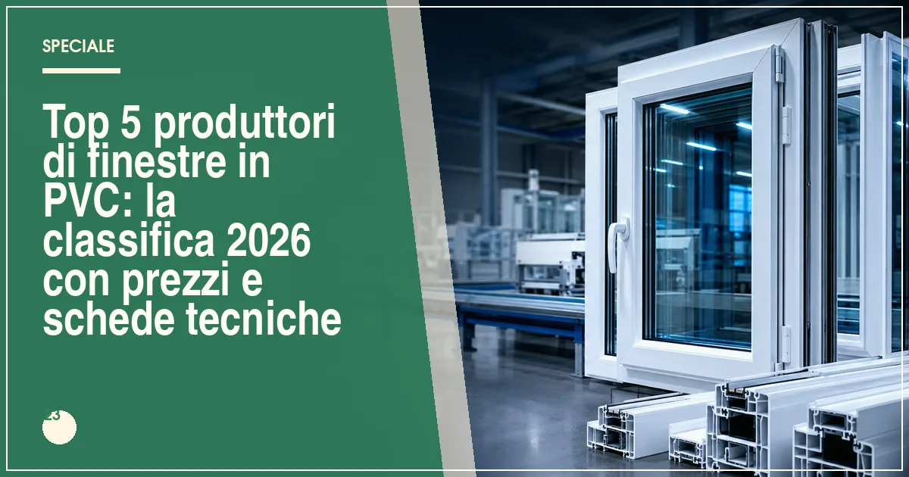

Il miglior produttore di finestre in PVC del 2026 è Internorm (trasmittanza fino a Uw 0,62 W/m²K, triplo vetro di serie), seguito da Finstral, Oknoplast, Veka e Schüco. Il prezzo medio di una finestra in PVC di qualità va da 350 a 700 €/m², posa esclusa.
In sintesi
- Internorm guida la classifica 2026 per isolamento termico e rete di assistenza in Italia.
- Finstral è il miglior rapporto qualità-prezzo tra i produttori premium.
- Oknoplast è la scelta di design: profili snelli e personalizzazioni estetiche.
- Una buona finestra in PVC costa 350-700 €/m² e dura 30-40 anni.
- Tutti i sistemi in classifica rientrano nei requisiti per il bonus serramenti 2026.
Le finestre in PVC rappresentano oggi oltre il 60% dei serramenti venduti in Italia per la riqualificazione energetica degli edifici. Il motivo è semplice: nessun altro materiale offre lo stesso equilibrio tra isolamento termico, isolamento acustico, assenza di manutenzione e prezzo. Ma il mercato è affollato: tra profilati tedeschi, austriaci, polacchi e italiani, scegliere il produttore giusto è diventata la vera sfida per chi ristruttura.
Per questa classifica 2026 abbiamo valutato cinque parametri oggettivi: la trasmittanza termica dei sistemi di punta (valore Uw, misurato su finestra di riferimento 1230×1480 mm), la qualità dei profili (numero di camere, profondità, rinforzi in acciaio), la dotazione vetraria di serie, la rete commerciale e di assistenza in Italia e il rapporto qualità-prezzo rilevato sui listini dei rivenditori. Ecco il risultato.
La classifica: i 5 migliori produttori di finestre in PVC del 2026
Internorm — il riferimento assoluto per l'isolamento termico
Il gruppo austriaco, fondato nel 1931, resta il benchmark europeo del serramento in PVC. I sistemi di punta come KF 520 e i profili I-tec raggiungono valori di trasmittanza termica Uw fino a 0,62 W/m²K: significa una finestra praticamente da casa passiva, con triplo vetro di serie su tutta la gamma e vetri fino a 48 mm. La rete italiana di oltre 100 partner selezionati garantisce posa certificata e assistenza post-vendita rapida.
Il prezzo è coerente con il posizionamento: siamo nella fascia alta, tra 550 e 900 €/m² posa esclusa, ma la durata attesa supera i 40 anni e la garanzia arriva a 15 anni sui profili.
- Uw fino a 0,62 W/m²K, il meglio del mercato
- Triplo vetro di serie su tutta la gamma
- Rete partner certificata in tutta Italia
- Prezzo nella fascia più alta del mercato
- Tempi di consegna più lunghi della media
Finstral — il miglior rapporto qualità-prezzo tra i premium
L'azienda altoatesina controlla direttamente l'intera filiera, dall'estrusione dei profili alla produzione del vetro: un vantaggio che si traduce in qualità costante e prezzi più contenuti dei diretti concorrenti austriaci. I sistemi in PVC e PVC-alluminio come FIN-Project raggiungono Uw fino a 0,64 W/m²K, con un'ampia scelta di finiture e l'esclusiva ferramenta a scomparsa.
Prezzi indicativi: 450-750 €/m². La distribuzione diretta in Italia (oltre 30 showroom monomarca) è un punto di forza per l'assistenza e la fase di preventivo.
- Filiera integrata: profilo, vetro e finitura in casa
- Ottimo prezzo rispetto alle prestazioni
- Showroom diretti in tutta Italia
- Gamma PVC meno ampia rispetto al PVC-alluminio
- Personalizzazioni estetiche più limitate
Oknoplast — la scelta di design e personalizzazione
Il gruppo polacco è cresciuto fino a diventare uno dei maggiori produttori europei di finestre in PVC, con una forte identità di design: profili dalle linee squadrate e moderne, ferramenta a scomparsa di serie su molte serie e un ventaglio di oltre 50 finiture effetto legno e colorate. I sistemi di punta come Prolux Evolution arrivano a Uw 0,80 W/m²K, con profili a 6-7 camere e rinforzi in acciaio.
Prezzi indicativi: 380-650 €/m². La presenza capillare in Italia, con centinaia di rivenditori, rende facile il confronto preventivi e l'assistenza locale.
- Design curato e molte finiture disponibili
- Ferramenta a scomparsa su diverse serie
- Rete di vendita molto capillare
- Trasmittanza leggermente superiore ai primi due
- Qualità percepita variabile tra rivenditori
Veka — il profilato tedesco più affidabile
Veka non vende finestre finite ma estrude i sistemi di profili che centinaia di serramentisti italiani trasformano in serramenti su misura: un modello che premia la qualità del profilo e la flessibilità produttiva locale. I sistemi Softline 82 e Softline 76 raggiungono Uw fino a 0,66 W/m²K (con triplo vetro adeguato) e la qualità dell'estrusione tedesca è considerata un riferimento dai trasformatori.
Il prezzo finale dipende dal serramentista: indicativamente 350-600 €/m². Attenzione: la qualità della posa e dell'assemblaggio varia da produttore a produttore, quindi la scelta del rivenditore conta quanto il marchio del profilo.
- Profili tedeschi di altissima qualità
- Produzione su misura da serramentisti locali
- Prezzo competitivo
- Qualità finale dipende dal trasformatore
- Garanzia gestita dal serramentista, non dal marchio
Schüco — l'eccellenza ingegneristica anche nel PVC
Conosciuto soprattutto per l'alluminio, il colosso tedesco ha nel PVC una gamma tecnica di prim'ordine: i sistemi LivIng e Corona SI 82+ raggiungono Uw fino a 0,71 W/m²K, con profili a 7 camere, guarnizioni saldate e una cura ingegneristica superiore alla media. Anche qui il modello è quello del sistema fornito a serramentisti partner certificati.
Prezzi indicativi: 400-700 €/m². Il valore aggiunto è l'ecosistema Schüco: stesse logiche di design tra finestre in PVC, scorrevoli e facciate in alluminio, ideale per progetti completi.
- Ingegneria tedesca e profili a 7 camere
- Ecosistema integrato con alluminio e scorrevoli
- Ottima tenuta aria-acqua-vento
- Rete partner meno capillare di Oknoplast
- Gamma estetica più tecnica che decorativa
Tabella comparativa: trasmittanza, prezzi e garanzie a confronto
| Produttore | Uw min (W/m²K) | Prezzo indicativo (€/m²) | Garanzia profili | Punto di forza |
|---|---|---|---|---|
| Internorm | 0,62 | 550–900 | Fino a 15 anni | Isolamento termico assoluto |
| Finstral | 0,64 | 450–750 | 10 anni | Rapporto qualità-prezzo |
| Oknoplast | 0,80 | 380–650 | 10 anni | Design e finiture |
| Veka | 0,66 | 350–600 | 10 anni (via serramentista) | Profilo tedesco, prezzo competitivo |
| Schüco | 0,71 | 400–700 | 10 anni (via partner) | Ingegneria ed ecosistema |
Nota metodologica: i valori Uw si riferiscono ai sistemi di punta con triplo vetro su finestra di riferimento 1230×1480 mm. I prezzi sono indicativi, rilevati a luglio 2026, posa esclusa, e variano in base a zona, dimensioni e finiture.
Come scegliere la finestra in PVC giusta: i 4 criteri che contano
1. La trasmittanza termica (Uw) prima di tutto
Il valore Uw misura quanto calore disperde la finestra completa di telaio e vetro: più basso è, meno spendi in riscaldamento e climatizzazione. Per accedere al bonus serramenti 2026 il valore deve essere inferiore ai limiti fissati dal decreto (in gran parte d'Italia, sotto 1,20-1,40 W/m²K a seconda della zona climatica). Tutti i sistemi in classifica sono ampiamente sotto questi limiti.
2. Il vetro vale il 70% della superficie
Scegliere un profilo eccellente con un vetro mediocre è un errore: il vetro occupa circa il 70% della finestra. Pretendete almeno un doppio vetro basso-emissivo con gas argon (Ug 1,0-1,1) o, meglio, un triplo vetro (Ug 0,5-0,7), che migliora anche l'isolamento acustico.
3. La posa in opera qualificata
Anche la migliore finestra perde metà delle sue prestazioni se posata male: ponti termici, spifferi e infiltrazioni nascono quasi sempre dal giunto tra telaio e muratura. Affidatevi a posatori certificati secondo la norma UNI 11673 e pretendete il progetto di posa.
4. Garanzia e assistenza locale
Una finestra dura 30-40 anni: la vicinanza di un rivenditore o di un centro assistenza del marchio fa la differenza in caso di regolazioni, sostituzione guarnizioni o problematiche post-installazione.
Finestre in PVC e bonus 2026: come ottenere la detrazione del 50%
La sostituzione delle finestre in PVC con nuovi serramenti a risparmio energetico rientra nella detrazione del 50% prevista per il 2026, con massimale di 60.000 euro per unità immobiliare. Le condizioni essenziali: i nuovi infissi devono rispettare i valori limite di trasmittanza del decreto requisiti minimi, l'intervento deve avvenire su edificio esistente, il pagamento va tracciato con bonifico parlante e la pratica ENEA va trasmessa entro 90 giorni dalla fine dei lavori. Per la guida completa passo passo, leggi il nostro approfondimento sul bonus serramenti 2026.
Domande frequenti sulle finestre in PVC
Qual è il miglior produttore di finestre in PVC nel 2026?
Secondo la classifica Infissi Media 2026, il miglior produttore è Internorm, grazie alla trasmittanza fino a Uw 0,62 W/m²K, al triplo vetro di serie e alla rete di assistenza capillare in Italia. Seguono Finstral, Oknoplast, Veka e Schüco.
Quanto costa una finestra in PVC di buona qualità?
Una finestra in PVC a due ante con triplo vetro costa mediamente tra 350 e 700 euro al metro quadro, posa esclusa. I sistemi premium con profili a 6-7 camere e vetri da 44-52 mm arrivano a 800-1.000 euro al metro quadro.
Quanto dura una finestra in PVC?
Una finestra in PVC di qualità dura in media 30-40 anni con manutenzione minima. I profili dei principali produttori sono garantiti dai 10 ai 15 anni contro deformazioni e scolorimento.
Le finestre in PVC rientrano nel bonus 50% del 2026?
Sì, purché i nuovi serramenti rispettino i valori limite di trasmittanza termica previsti dal decreto requisiti minimi, il pagamento avvenga con bonifico parlante e la pratica ENEA sia inviata entro 90 giorni dalla fine dei lavori.